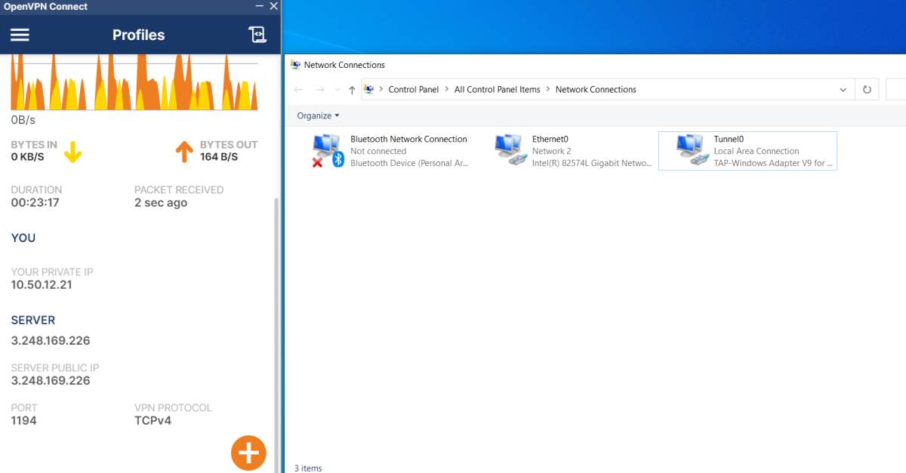
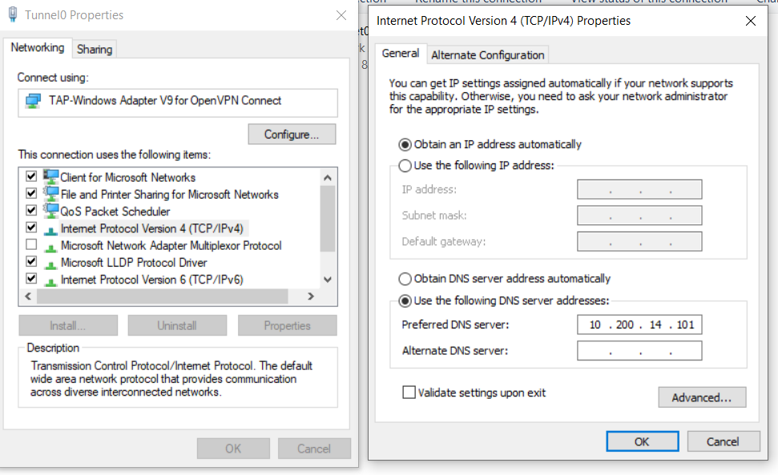
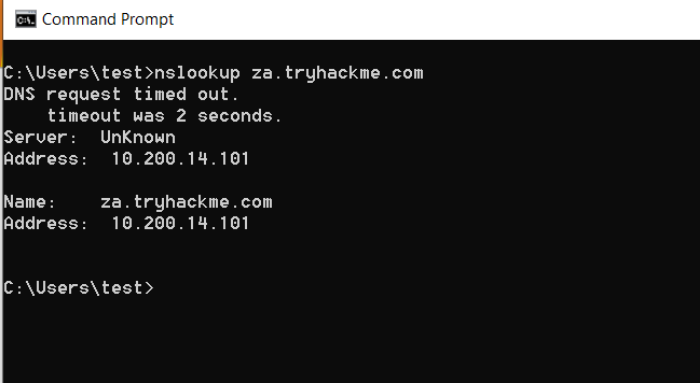
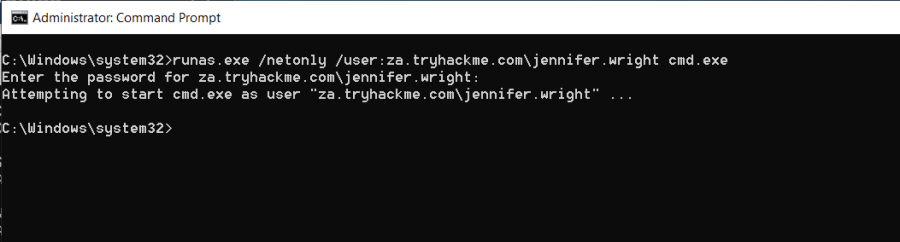
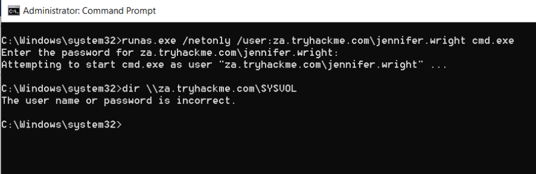
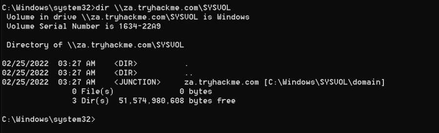
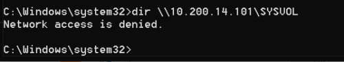

Credential Injection
Credential Injection
Note: To be Solved ONLY using local own Windows Machine
You can get incredibly far doing AD enumeration from a Kali machine. Still, if you genuinely want to do in-depth enumeration and even exploitation, you need to understand and mimic your enemy. Thus, you need a Windows machine. This will allow us to use several built-in methods to stage our enumeration and exploits. In this network, we will explore one of these built-in tools, called the runas.exe binary.
Runas Explained
Have you ever found AD credentials but nowhere to log in with them? Runas may be the answer you've been looking for!
In security assessments, you will often have network access and have just discovered AD credentials but have no means or privileges to create a new domain-joined machine. So we need the ability to use those credentials on a Windows machine we control.
If we have the AD credentials in the format of <username>:<password>, we can use Runas, a legitimate Windows binary, to inject the credentials into memory. The usual Runas command would look something like this:
runas.exe /netonly /user:<domain>\<username> cmd.exe
Let's look at the parameters:
▪ /netonly - Since we are not domain-joined, we want to load the credentials for network authentication but not authenticate against a domain controller. So commands executed locally on the computer will run in the context of your standard Windows account, but any network connections will occur using the account specified here.
▪ /user - Here, we provide the details of the domain and the username. It is always a safe bet to use the Fully Qualified Domain Name (FQDN) instead of just the NetBIOS name of the domain since this will help with resolution.
▪ cmd.exe - This is the program we want to execute once the credentials are injected. This can be changed to anything, but the safest bet is cmd.exe since you can then use that to launch whatever you want, with the credentials injected.
Once you run this command, you will be prompted to supply a password. Note that since we added the /netonly parameter, the credentials will not be verified directly by a domain controller so that it will accept any password. We still need to confirm that the network credentials are loaded successfully and correctly.
Note: If you use your own Windows machine, you should make sure that you run your first Command Prompt as Administrator. This will inject an Administrator token into CMD. If you run tools that require local Administrative privileges from your Runas spawned CMD, the token will already be available. This does not give you administrative privileges on the network, but will ensure that any local commands you execute, will execute with administrative privileges.
Important Note:
If we use the Tryhackme JUMP Machine, by doing RDP into it. We do not need runas Or this entire task of credential injection.
This is because, the machine THMJMP1 already has the user jennifer.wright in it which is a valid domain credential & also the system THMJMP1 is joined in the domain. (So we already know where to use the credentials)
Thus, from THMJMP1 we can directory list the SYSVOL without any runas command
However, the machine is still not Doamin Joined (Will discuss in next task)
Scenario (Imp):
Suppose we are doing pentesting in an AD environment. We have been given VPN access only(No Machine Access). Say we found a credential. In such a case, we can use our own Windows Machine.
Setup:
1. First, install OpenVPN in the windows machine.
2. Then connect to the VPN Network. (In our case we connected to CybeX-adenumeration.ovpn)
Note: We have to disconnect VPN from Kali machine as only 1 machine can access
3. We are now connected to the AD Network, However we need to setup DNS. It can be done by 2 ways
A) Use the GUI Network Connection tools. I renamed the OpenVPN adapter to Tunnel0 for convenience. Then open the adapter properties(IPv4). Keep the IP Address to be Automatic & Set the DNS as required.


B) Using command line in a powershell.
$dnsip = "<DC IP>"
$index = Get-NetAdapter -Name 'Ethernet' | Select-Object -ExpandProperty 'ifIndex'
Set-DnsClientServerAddress -InterfaceIndex $index -ServerAddresses $dnsip
Of course, 'Ethernet' will be whatever interface is connected to the TryHackMe network. So in our case: Tunnel0
4. Test DNS connection.
nslookup za.tryhackme.com

The above confirms our DNS is working.
5. Open an administator command prompt in our local windows machine & run the following command.
runas.exe /netonly /user:za.tryhackme.com\jennifer.wright cmd.exe
It will ask for password & then open a new cmd prompt with the domain user from our local machine.

6. Notice: If we try to list the SYSVOL from our old cmd. It won't work as my windows machine is not a part of the Active Directory.
(Equivalent : Without runas)

7. Now, in the newly opened CMD we can list the SYSVOL indicating we have injected the credentials.
(Equivalent : With runas)

We won't go too much in-depth now into the contents of SYSVOL, but note that it is also good to enumerate its contents since there may be some additional AD credentials lurking there.
IP vs Hostnames
Question: Is there a difference between dir \\za.tryhackme.com\SYSVOL and dir \\10.200.14.101\SYSVOL and why the big fuss about DNS?

There is quite a difference, and it boils down to the authentication method being used. When we provide the hostname, network authentication will attempt first to perform Kerberos authentication. Since Kerberos authentication uses hostnames embedded in the tickets, if we provide the IP instead, we can force the authentication type to be NTLM. While on the surface, this does not matter to us right now, it is good to understand these slight differences since they can allow you to remain more stealthy during a Red team assessment. In some instances, organisations will be monitoring for OverPass- and Pass-The-Hash Attacks. Forcing NTLM authentication is a good trick to have in the book to avoid detection in these cases.
Using Injected Credentials
Now that we have injected our AD credentials into memory, this is where the fun begins. With the /netonly option, all network communication will use these injected credentials for authentication. This includes all network communications of applications executed from that command prompt window.
This is where it becomes potent. Have you ever had a case where an MS SQL database used Windows Authentication, and you were not domain-joined? Start MS SQL Studio from that command prompt; even though it shows your local username, click Log In, and it will use the AD credentials in the background to authenticate!